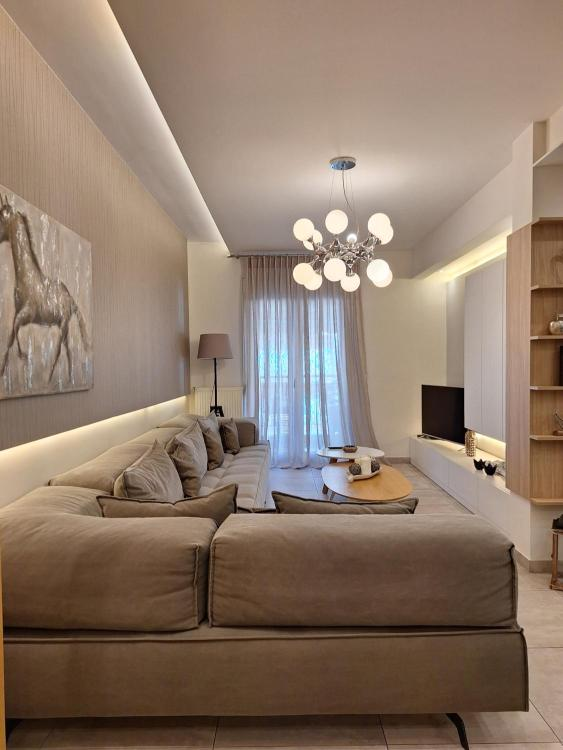
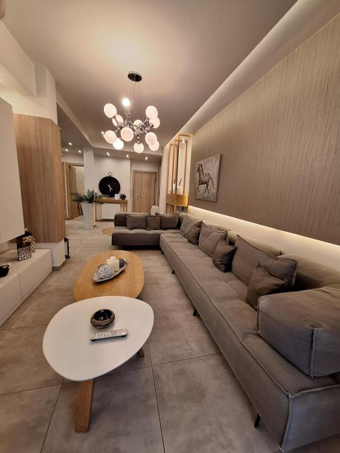

Über die Unterkunft
bis zu 6 Personen · 2 Schlafzimmer · 2 Betten · 1 Badezimmer · 78 m²
Moderne, komplett renovierte Wohnung mit 78 m² an der Vasilissis-Olgas-Allee, wenige Minuten von der Uferpromenade, mit Restaurants, Bäckereien und Supermärkten ringsum.
Großes Wohnzimmer mit einem sehr großen Ecksofa, auf dem man auch schlafen kann, und Fernseher. Offene, voll ausgestattete Küche mit Esstisch, Backofen, Kochfeld, Kühlschrank, Mikrowelle und Waschmaschine.
Zwei Schlafzimmer mit Doppelbetten und Klimaanlage sowie eine Arbeitsecke mit Schreibtisch.
Modernes Bad mit Glasdusche, Handtüchern, Bademänteln und Pflegeprodukten.
Der Balkon mit Markise, Tischchen und Sesseln blickt über die Stadt.
Ausstattung
- Balkon
- WLAN
- Klimaanlage
- Heizung
- Fernseher
- Voll ausgestattete Küche
- Backofen und Mikrowelle
- Waschmaschine
- Schreibtisch
- Bettwäsche
- Bade- und Handtücher
- Bademäntel
- Shampoo und Duschgel
- Aufzug
- Haustiere auf Anfrage
- Babyreisebett kostenlos
Lage
Vasilissis Olgas Ave 74, 546 43 Thessaloniki